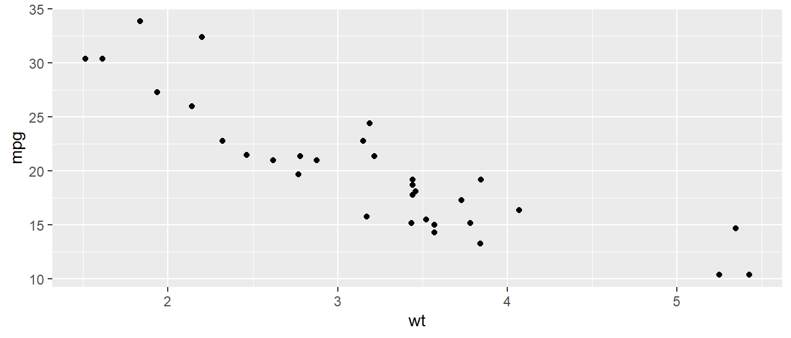
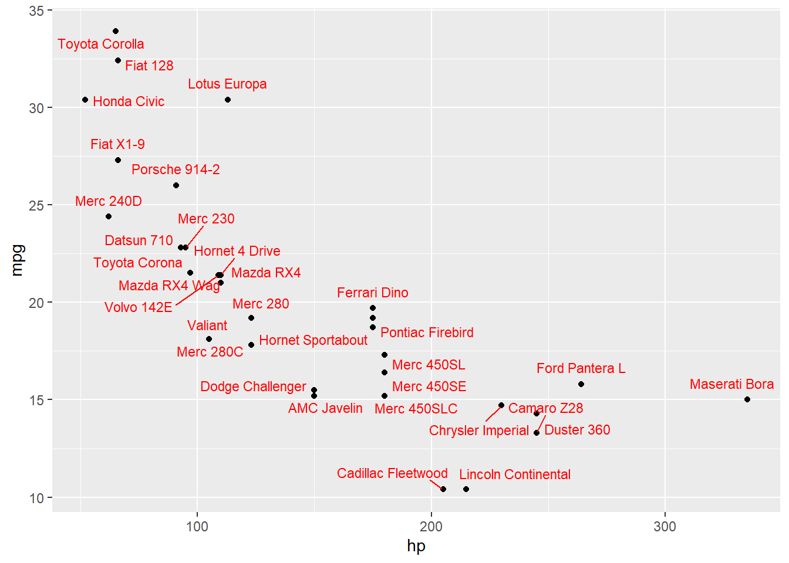

Chapter 7 Visualisation with ggplot2
7.1 Core concepts of grammar of graphics
ggplot21213 is the package developed by Hadley Wickham, which is based on concepts laid (2005) down by Leland Wilkinson in his The Grammar of Graphics.14 Basically, a grammar of graphics is a framework which follows a layered approach to describe and construct visualizations or graphics in a structured manner. Even the letters gg in ggplot2 stand for grammar of graphics.
Hadley Wilkinson, in his paper titled A Layered Grammar of Graphics15(2010)16 proposed his idea of layered grammar of graphics in detail and simultaneously put forward his idea of ggplot2 as an open source implementation framework for building graphics. Readers/Users are advised to check the paper as it describes the concept of grammar of graphics in detail. By the end of the decade the package progressed17 to one of the most used and popular packages in R.
The relationship between the components explained in both the grammars can be illustrated with the following figure18. The components on the left have been put forward by Wilkinson whereas those on right were proposed by Wickham. It may be seen that TRANS has no relation in ggplot2 as its role is played by in-built features of R.

Figure 7.1: Layers in Grammar of Graphics mapped in GGPLOT2
Thus, to build a graphic having one or more dimensions, from a given data, we use seven major components -
- Data: Unarguably, a graphic/visualisation should start with a data. It is also the first argument in most important function in the package i.e.
ggplot(data =). - Aesthetics: or
aes()in short, provide a mapping of various data dimensions to axes so as to provide positions to various data points in the output plot/graphic. - Geometries: or
geomsfor short, are used to provide the geometries so that data points may take a concrete shape on the visualisation. For e.g.the data points should be depicted as bars or scatter points or else are decided by the providedgeoms. - Statistics: or
statfor short, provides the statistics to show in the visualisation like measures of central tendency, etc. - Scale: This component is used to decide whether any dimension needs some scaling like logrithmic transformation, etc.
- Coordinate System: Though most of the time cartesian coordinate system is used, yet there are times when polar coordinate system (e.g.pie chart) or spherical coordinate system (e.g.geographical maps) are used.
- Facets: Used when based on certain dimension, the plot is divided into further sub-plots.
7.3 GGPLOT2 in action
Out of the afore-mentioned components, three are to be explicitly provided and thus can be understood as mandatoty components. These three componenets are
data,aestheticsandgeometries. Whilst these three compoenents are mandatorily provided, it is not that others are not mandatory. basically other componenets have their defaults (e.g.default coordinate system is cartesian coordinate system). Let us dive into these three essential components and build a plot using these.
7.3.1 Building a basic plot
We will use mtcars datasets, a default dataset to learn the concepts.
See what happens when data is provided to ggplot function-

We can see that a blank chart/plot space has been created as our data mtcars has now mapped with ggplot2. Now let us provide aesthetic mappings to this using function aes()
 You may now notice, apart from creating a blank space for plot, the two dimensions provided, i.e.
You may now notice, apart from creating a blank space for plot, the two dimensions provided, i.e.wt and mpg have been mapped with x and y axes respectively. Since no geometry has been provided, the plot area is still blank. Now we will provide geometry to our dimension say point. To do this we will use another layer of function geom_* (geom_point() in this case specifically).

Notice that another layer has been added to function ggplot() using a + sign here.
We could have used another geometry say boxplot here.

Thats basic architecture of this package. Now lets discuss more on aesthetics and geometries before moving on to another compoenents.
7.3.2 More on Aesthetics
Now what if color is provided inside geom_* function.
 As the argument
As the argument color='red' was mentioned inside the geom_point() function, it turned every point to red. But if we have to pass a vector/column based on which the points should be colored, it should be wrapped within aesthetics function aes() -
 Since the
Since the cyl column was a numeric column, ggplot2 thought it to be a continuos column and thus produced a color scale instead of a legend. We however, know that this is a categorical column here, and thus if we want to produce a color legend we will have to convert it to a factor first. See now the changes-
 One more thing -
One more thing - aes() function wrapped in geom_point() function could have been wrapped in ggplot() also. So basically the following code will also produce exactly the same chart-
ggplot(mtcars, aes(wt, mpg, color = as.factor(cyl))) +
geom_point()Two questions arise here -
- Is there any difference between the two?
Ans: Yes, basically aesthetics if provided under the geoms, will override those aesthetics which are already provided under ggplot function. See the result of following command in your console-

- What if
color='red'(or blue) is passed insideaes()?
Ans: In this case ggplot will try to map it some aesthetics called blue. Lets see
 Interesting! GGPLOT2 has not only mapped a dummy variable called
Interesting! GGPLOT2 has not only mapped a dummy variable called 'blue' with color of points, but also created a legend. More interestingly the color is not what we wanted.
Different types of aesthetic attributes work better with different types of variables. For example, color and shape work well with discreet variables, while size or alpha (transparency) works well for continuous variables. In your console run the following command and check results
ggplot(mtcars, aes(wt, mpg, shape=as.factor(cyl))) +
geom_point()
# OR
ggplot(mtcars, aes(wt, mpg, size=cyl)) +
geom_point()
# OR
ggplot(mtcars, aes(wt, mpg, alpha=cyl)) +
geom_point()Multiple aesthetics can be mapped simultaneously, as per requirement. See this example-
Some commonly used aesthetics are -
shape= Display a point withgeom_point()as a dot, star, triangle, or squarefill= The interior color (e.g.of a bar or boxplot)color= The exterior line of abar,boxplot, etc., or the point color if usinggeom_point()size= Size (e.g.line thickness, point size)alpha= Transparency (1 = opaque,0 = invisible)binwidth= Width of histogram binswidth= Width of bar plot columnslinetype= Line type (e.g.solid, dashed, dotted)
A few shapes available in shape aesthetics

Figure 7.2: Some Shapes available in GGplot
7.3.3 More on Geoms
In previous section we have seen that as soon as we passed a geom_* function/layer to data & aesthetics layers, the chart/graph was constructed. Actually, geom_point() function, in the background added three more layers i.e.stat, geom and position. Why? The answer is simple, geom_* are generally shortcuts, which add these three layers. So in our example, ggplot(mtcars, aes(wt, mpg)) + geom_point() is actually equivalent to -
ggplot(mpg, aes(displ, hwy)) +
layer(
mapping = NULL,
data = NULL,
geom = "point",
stat = "identity",
position = "identity"
)A complete list of geoms available in ggplot2 is given in Annex-. Some common geoms are listed below:
- Histograms -
geom_histogram() - Bar charts -
geom_bar()orgeom_col() - Box plots -
geom_boxplot() - Points (e.g.scatter plots) -
geom_point() - Line graphs -
geom_line()orgeom_path() - Trend lines -
geom_smooth()
Note that in ggplot2 color aesthetic represent border color of geometry and fill aesthetic represent color used to be fill that geometry.
7.3.3.1 List of geoms available in ggplot2
| Topic | Title |
|---|---|
| geom_abline | Reference lines: horizontal, vertical, and diagonal |
| geom_bar | Bar charts |
| geom_bin_2d | Heatmap of 2d bin counts |
| geom_blank | Draw nothing |
| geom_boxplot | A box and whiskers plot (in the style of Tukey) |
| geom_contour | 2D contours of a 3D surface |
| geom_count | Count overlapping points |
| geom_density | Smoothed density estimates |
| geom_density_2d | Contours of a 2D density estimate |
| geom_dotplot | Dot plot |
| geom_errorbarh | Horizontal error bars |
| geom_function | Draw a function as a continuous curve |
| geom_hex | Hexagonal heatmap of 2d bin counts |
| geom_freqpoly | Histograms and frequency polygons |
| geom_jitter | Jittered points |
| geom_crossbar | Vertical intervals: lines, crossbars & errorbars |
| geom_map | Polygons from a reference map |
| geom_path | Connect observations |
| geom_point | Points |
| geom_polygon | Polygons |
| geom_qq_line | A quantile-quantile plot |
| geom_quantile | Quantile regression |
| geom_ribbon | Ribbons and area plots |
| geom_rug | Rug plots in the margins |
| geom_segment | Line segments and curves |
| geom_smooth | Smoothed conditional means |
| geom_spoke | Line segments parameterised by location, direction and distance |
| geom_label | Text |
| geom_raster | Rectangles |
| geom_violin | Violin plot |
| CoordSf | Visualise sf objects |
| update_geom_defaults | Modify geom/stat aesthetic defaults for future plots |
7.3.4 Faceting
The amount of data also makes a difference: if there is a lot of data it can be hard to distinguish different groups. An alternative solution is to use faceting, as described next. Facets, or small-multiples, are used to split one plot into a multi-panel figure, with one panel (facet) per group of data. The same type of plot is created multiple times, each one using a sub-group of the same dataset.
In ggplot2 faceting can be acheived using either of the functions -
facet_grid()creates a grid of plots, with each plot showing a subset of the data. We may also specify the number of columns to use in the grid using thencolargument.facet_wrap()creates a grid of plots with different variables on each axis. We may also specify the scales to use for each axis using thescalesargument.
Let us understand this, with these examples.
Example-1

Example-2
Notice that facet_grid() arranges the plots in a grid with different variables on each axis. We specify the variables to use for faceting using the ~ operator. For example, facet_grid(variable1 ~ variable2) will create a grid of plots with variable1 on the y-axis and variable2 on the x-axis. This is useful when we want to compare the relationship between two variables across different levels of a third variable.
On the other hand, facet_wrap() creates a grid of plots, each showing a subset of your data based on a single variable. We specify the variable to use for faceting using the same ~ operator here too. For example, facet_wrap(~ variable) will create a grid of plots, each showing a different level of the variable. This is useful when you have a single categorical variable that you want to use for faceting.
7.3.5 Labels
Labeling is an essential aspect of data visualization because it provides context and information about the data being presented. Labels can include titles, axis labels, legends, and annotations that describe the data and provide important information that helps the viewer understand what they are looking at. Proper labeling can help to make the data more understandable, clear, and accessible, which enhances its overall value and impact.
7.3.5.1 Labeling Data points
To label data points in ggplot2, we can use the geom_text() function. This function adds text to the plot at the specified x and y coordinates. Moreover, we can customize the appearance of the labels by adding additional arguments to geom_text() -
sizeto set font sizecolorto color the fontshjustorvjustto adjust the labels vertically or horizontally, respectively.
Example-
ggplot(mtcars, aes(x = hp, y = mpg)) +
geom_point() +
geom_text(aes(label = rownames(mtcars)),
size = 3,
color = "red",
vjust = -1)
TIP: Use package ggrepel to show all labels, when needed, without overlapping and in a better way. E.g.
library(ggrepel)
options(ggrepel.max.overlaps = Inf)
ggplot(mtcars, aes(x = hp, y = mpg)) +
geom_point() +
geom_text_repel(aes(label = rownames(mtcars)),
size = 3,
color = "red",
vjust = -1)
7.3.5.2 Labeling Charts
There are several ways to add labels to ggplot2 charts, but we will focus on using the labs() function, which allows us to add titles, subtitles, axis labels, and other annotations like caption, etc. to the plot. Example -
ggplot(mtcars, aes(x = hp, y = mpg)) +
geom_point() +
labs(title = "Scatter plot of mpg vs. hp",
subtitle = "Data from mtcars dataset",
x = "Horsepower",
y = "Miles per gallon",
caption = "Source: R datasets")
We can also customize the appearance of the labels by using the theme() function, which allows us to modify the font size, font family, and other visual properties of the labels. Example-
ggplot(mtcars, aes(x = hp, y = mpg)) +
geom_point() +
labs(title = "Scatter plot of mpg vs. hp",
x = "Horsepower",
y = "Miles per gallon") +
theme(plot.title = element_text(size = 20, color = 'seagreen'),
axis.title = element_text(size = 16, color = "blue"))
7.3.6 Modifying scales
Several times the requirement is to modify x or/and y axis minimum and/or maximum values i.e.axis limits; or otherwise the axis itself is to be transformed. For these requirements, we have sacle_*_*() group of functions in ggplot2.
For example we have these two functions for continuos axis/variables.
scale_x_continuous(name, breaks, labels, limits, trans)
scale_y_continuous(name, breaks, labels, limits, trans)In arguments to above functions, we can see that axis title (name), axis breaks, axis labels, axis limits, and transformations can be dealt with.
Example-
# Basic Scatter Plot
ggplot(cars, aes(x = speed, y = dist)) +
geom_point()
# Modifying scales both axis title and axis limits
ggplot(cars, aes(x = speed, y = dist)) +
geom_point() +
scale_x_continuous(name="Speed of cars", limits=c(0, 30)) +
scale_y_continuous(name="Stopping distance", limits=c(0, 150))

Figure 7.3: Modifying Scales in GGplot2
As for transformation we can use trans argument
ggplot(cars, aes(x = speed, y = dist)) +
geom_point()+
scale_x_continuous(trans='log10') +
scale_y_continuous(trans='log10')
state.x77 %>%
as.data.frame() %>%
ggplot(aes(Area, Illiteracy/100)) +
geom_point() +
scale_x_continuous(name = "Area in Square Miles", labels = scales::comma) +
scale_y_continuous(name = "Illiteracy as % of Population", labels = scales::percent)
Figure 7.4: Transforming Axes in GGplot2
7.3.7 Themes
We can customize the appearance of plots, such as the axis labels, titles, background colors, and font sizes by applying themes to the plot. In the above, notice that we have used theme() function to modify font etc. of labels in the plot. Now see the following example-
ggplot(mtcars, aes(x = wt, y = mpg)) +
geom_point() +
labs(title = "MPG vs. Weight",
x = "Weight (1000 lbs)",
y = "Miles per Gallon") +
theme_bw()
ggplot(mtcars, aes(x = wt, y = mpg)) +
geom_point() +
labs(title = "MPG vs. Weight",
x = "Weight (1000 lbs)",
y = "Miles per Gallon") +
theme_void()

Figure 7.5: Modifying Themes in GGplot2 theme bw (left) and theme void (right)
In this example, weve used the theme_bw() and theme_void() functions to apply a black-and-white theme to the plot. Some theme functions that can be used to modify plot themes are -
theme_bw(): A black and white theme that is useful when you want a simple, clean plot.theme_classic(): A classic theme that adds gray borders and gridlines to the plot.theme_void(): A theme with a transparent background and no gridlines or borders.theme_minimal(): A minimalistic theme that removes the gridlines and reduces the size of the axis labels.theme(axis.title = element_text(size = 16), plot.title = element_text(size = 20)): This code sets the font size of the axis and plot titles to 16 and 20, respectively.theme(panel.background = element_rect(fill = "gray90")): This code sets the background color of the plot to a light gray color.
We can also customize specific elements of the plot using element_*() functions. For example:
ggplot(mtcars, aes(x = wt, y = mpg)) +
geom_point() +
labs(title = "MPG vs. Weight",
x = "Weight (1000 lbs)",
y = "Miles per Gallon") +
theme_bw() +
theme(plot.title = element_text(color = "blue", size = 20, face = "bold"))
Figure 7.6: Customising Themes in GGplot2
We can combine multiple customization options together to create a customized theme that fits our specific needs. The possibilities for customization are endless, so feel free to experiment and create your own unique theme!
7.3.8 Saving/exporting plots
Of course, after creating charts/plots we would like to save them for further usage in our reports/documents, etc. Though there may be many options to save a plot to disk, we will be focussing on three different methods.
Saving through Rstudio menu
To save a graph using the RStudio menus, go to the Plots tab and choose Export.

Figure 7.7: Exporting Charts
Three options are available here.
- Save as Image
- Save as PDF
- Copy to clipboard.
Saving through code
We may also save our plots using function ggsave() here. Its syntax is simple
ggsave(
filename,
plot = last_plot(),
device = NULL,
path = NULL,
scale = 1,
width = NA,
height = NA,
units = c("in", "cm", "mm", "px"),
dpi = 300,
limitsize = TRUE,
bg = NULL,
...
)All arguments are simple to understand. Thus for example if we need to save the following violin plot,

Figure 7.8: Violin Plot
we can use this code
ggsave('violin.png', base_plot, height = 10, width = 8)Graphics Devices (Base R Plots)
If we create plots outside of ggplot (with plot(), hist(), boxplot(), etc.), we cannot use ggsave() to save our plots since it only supports plots made with ggplot.
Base R provides a way to save these plots with its graphic device functions. There are three steps involved in this process-
- Specify the file extension and properties (size, resolution, etc.) along with units
- create the plot, in base R or/and ggplot2
- Signal that the plot is finished and save it by running
dev.off(). Thus, using this way we can insert as many charts in a single pdf without turning off the device till our pdf is ready.
Example-
# Creates a png file
png(
filename = "scatter.png",
width = 5,
height = 3,
units = "in",
res = 300
)
# Prints a ggplot2 in it
ggplot(mtcars, aes(x = wt, y = mpg)) +
geom_point() +
geom_abline(intercept = 5,
slope = 3,
color = "seagreen")
# Device is off
dev.off()## png
## 2# Creates a new PDF file
pdf(file = "two_page.pdf",
width = 6,
height = 4)
#first plot
plot(mtcars$wt, mtcars$mpg)
abline(a = 5, b = 3, col = "red")
# Second Plot
ggplot(mtcars, aes(x = wt, y = mpg)) +
geom_point() +
geom_abline(intercept = 5,
slope = 3,
color = "seagreen")
# Device Off
dev.off()## png
## 2Hadley Wickham et al., Ggplot2: Create Elegant Data Visualisations Using the Grammar of Graphics, 2024, https://ggplot2.tidyverse.org.
Hadley Wickham, A Layered Grammar of Graphics, Journal of Computational and Graphical Statistics 19, no. 1 (2010): 328, https://doi.org/10.1198/jcgs.2009.07098.
Source: Hadley Wickhams paper on the layered grammar of graphics
Hadley Wickham, Ggplot2: Elegant Graphics for Data Analysis (Springer-Verlag New York, 2016), https://ggplot2.tidyverse.org.